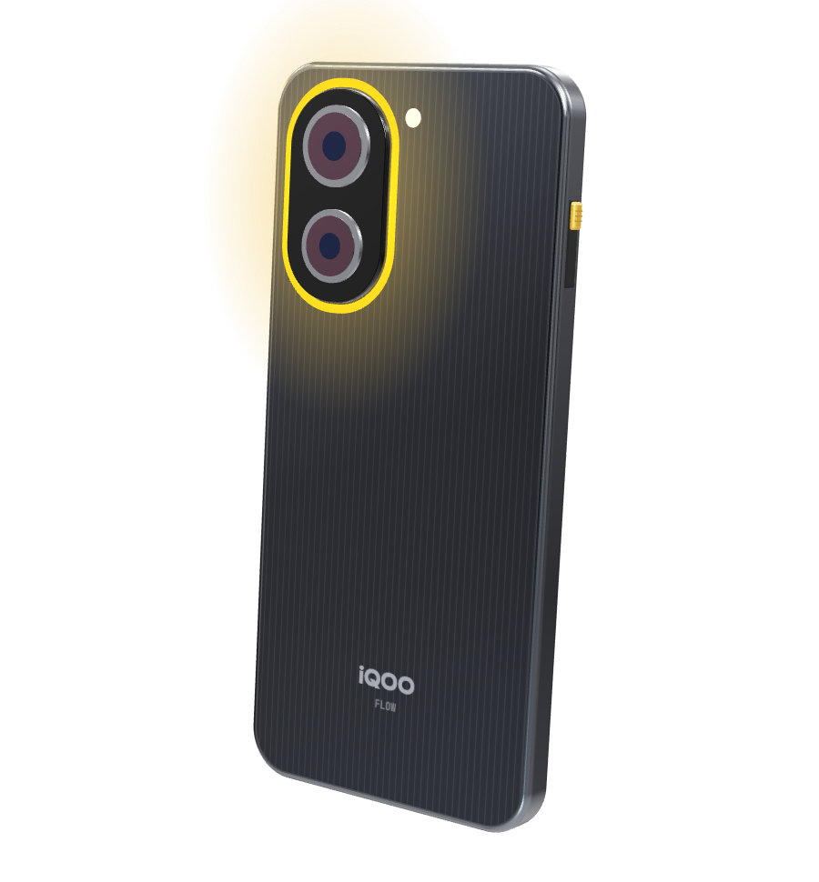
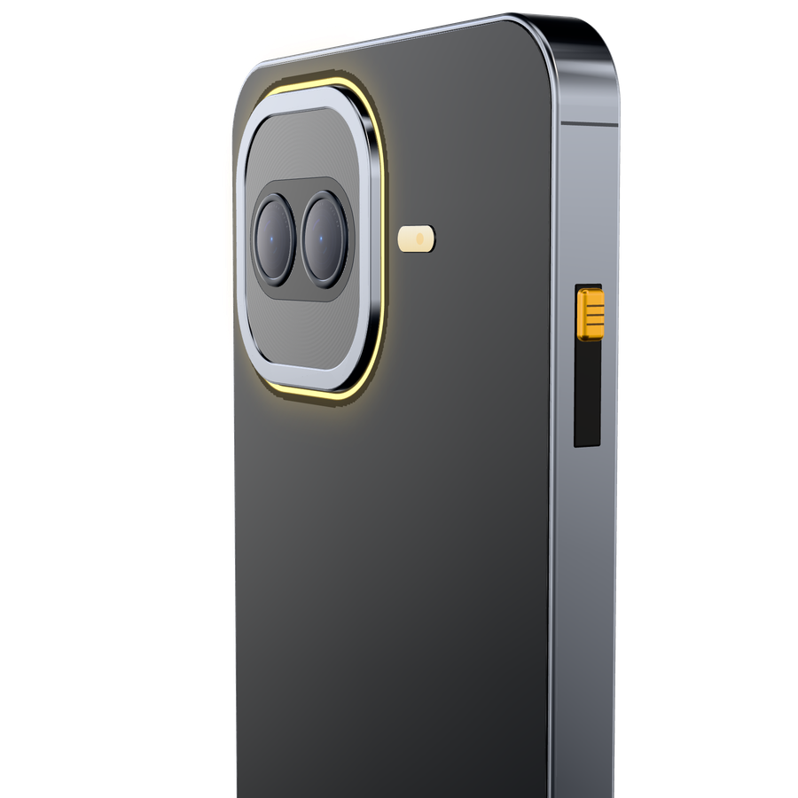
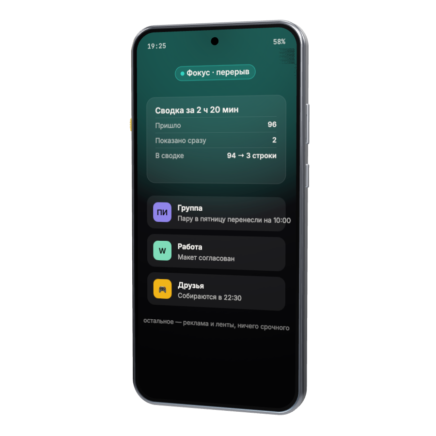
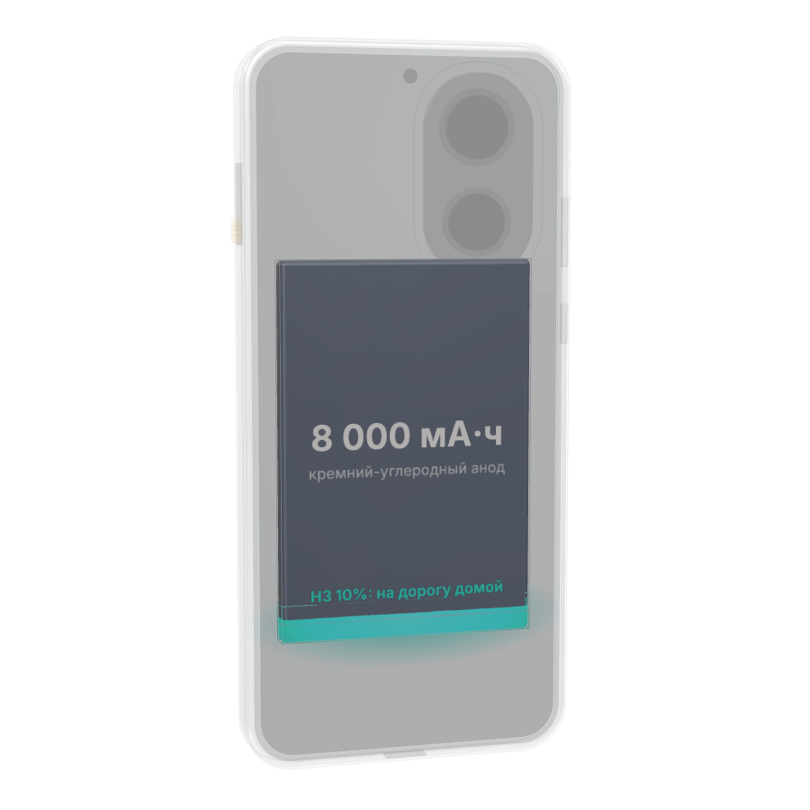
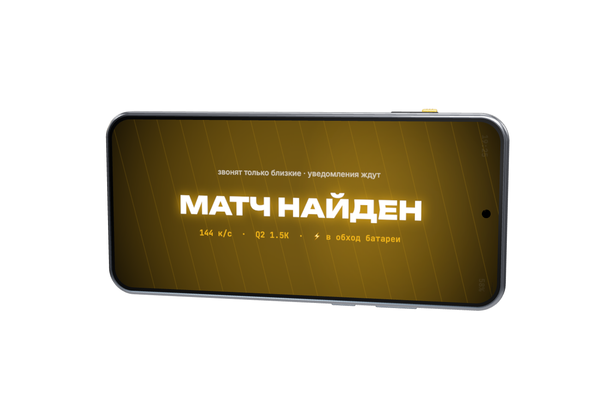
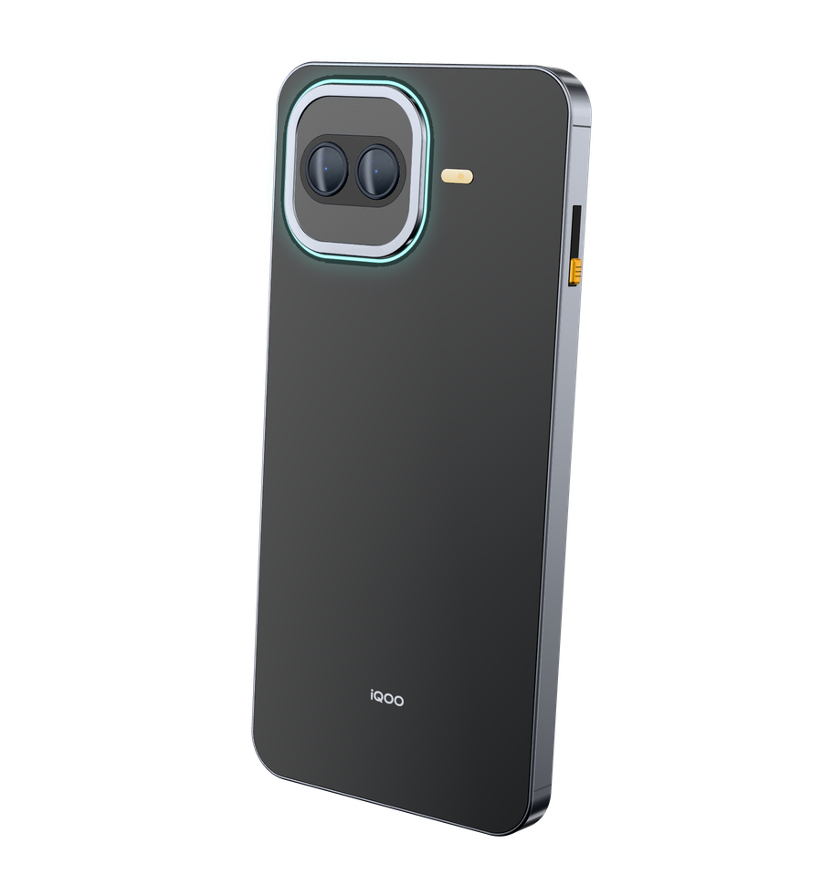

Один щелчок — и телефон перестаёт отвлекать
Концепт смартфона для студентов и молодых специалистов. На корпусе есть тумблер режимов Игра, Жизнь и Фокус. Внутри работает ИИ «Шумодав»: он сортирует уведомления прямо на телефоне. Часть заряда зарезервирована и не тратится на игры.
Отказываться от смартфона молодёжь не хочет. Нужен простой способ переводить его из режима «учусь» в режим «играю» и обратно.
Режимы фокусировки в Android для этого есть, но заходить в настройки по нескольку раз в день неудобно. Поэтому в iQOO Flow режимы вынесены на физический тумблер.

Вверх — Игра, в середине — Жизнь, вниз — Фокус. Переключается не глядя, даже на заблокированном телефоне. Режим подтверждают щелчок, вибрация и цвет кольца у камер.

Важное показывает сразу, остальное откладывает в сводку. Расшифровывает голосовые и выделяет из них задачи. Модель на 3 млрд параметров работает без облака.

8 000 мА·ч и зарядка 100 Вт. Последние 10% отведены под оплату, навигацию, звонки и мессенджеры. В режиме Игра питание идёт в обход батареи.

Snapdragon 8 Gen 5 и игровой чип Q2: до 144 кадров в секунду в разрешении 1.5K. Экран 144 Гц с ШИМ 4320 Гц, защита IP68 и IP69.
Лиза, 20 лет. Третий курс, на полставки ведёт соцсети кофейни, вечером играет с друзьями. До 23:59 нужно сдать курсовую.
146 непрочитанных, 31% заряда, друзья зовут играть.
Фокус до 22:00: соцсети на паузе, дозвониться могут четверо.
Сообщение Лёши о проекте показано сразу, ещё 40 ждут в сводке.
Запись научрука на 2:14 расшифрована на телефоне, из неё две задачи.
96 новых сообщений: два показаны сразу, остальные в сводке из трёх строк.
Курсовая отправлена. Игра: 144 к/с, чип Q2, питание в обход батареи.
Напоминание о паре в 10:00, тишина до 8:00, резерв заряда сохранён.
| Элемент Flow | Где уже работает | Статус |
|---|---|---|
| Трёхпозиционный переключатель | Alert Slider в смартфонах OnePlus с 2015 года; в OnePlus 13 вместе с IP68 и IP69 | есть на рынке |
| ИИ-приоритет и сводки уведомлений | Apple Intelligence: локальная модель примерно на 3 млрд параметров (iOS 18) | есть на рынке |
| Языковая модель на 3 млрд параметров | Llama 3.2 3B: 28–32 токена/с на NPU Snapdragon 8 Elite и 8 Elite Gen 5 (Qualcomm AI Hub) | есть на рынке |
| Распознавание русской речи без интернета | GigaAM-v3 от Сбера, открытая лицензия MIT | открытая технология |
| Батарея 8 000 мА·ч в тонком корпусе | iQOO Z11: 9 020 мА·ч при толщине 8,25 мм, режим «1% хватит на звонки, навигацию и сообщения» | есть у iQOO |
| Snapdragon 8 Gen 5, Q2, 144 Гц, обходная зарядка | iQOO 15R, продаётся в России с марта 2026 года | есть у iQOO |
| Подсветка на корпусе | iQOO 15, «Пульс монстра» | есть у iQOO |
| Что нужно сделать | Объединить всё в одном устройстве и дообучить модель на русском языке | новое во Flow |
| Платформа | Snapdragon 8 Gen 5 (3 нм) + игровой чип Q2как в iQOO 15R |
|---|---|
| Память | 12 ГБ LPDDR5X Ultra · 256 или 512 ГБ UFS 4.1 |
| Экран | 6,59″ 1.5K AMOLED, 144 Гц, ШИМ 4320 Гц, до 5 000 нит |
| Тумблер | 3 положения: Игра, Жизнь, Фокусновое |
| ИИ | Шумодав: локальная модель ≈3 млрд параметров (INT4, ≈2 ГБ) и распознавание речи без интернетановое |
| Батарея | 8 000 мА·ч, кремний-углеродный анод, НЗ-заряд 10% · 100 Вт · обходная зарядка |
| Индикация | Световое кольцо вокруг камер в цвете режима |
| Камеры и защита | 50 МП Sony LYT-700V с OIS · 8 МП · фронтальная 32 МП · IP68 и IP69 |
| Система | OriginOS 7 · 4 версии Android и 6 лет обновлений безопасности |
| Цена | 59 990 ₽ (12/256) · 64 990 ₽ (12/512) |

Сначала обновление для iQOO 15R и Z11, которые уже продаются. Новый телефон — после пилота.
Приложение для Android: плитка и кнопка вместо тумблера, правила режимов на стандартных API, открытая модель на NPU.
100 студентов 18–24 лет две недели пользуются iQOO 15R и Z11: дневник и обезличенная статистика.
Режимы и сводки приходят обновлением на 15R и Z11, это даёт охват и обратную связь.
Тумблер, 8 000 мА·ч и кольцо на платформе 15R, сертификация и продажи.
Если тумблер приживётся, его можно добавить в серии Z и Neo.
Ближний круг проходит всегда, повторный звонок пробивает любой режим, всё отложенное лежит в сводке.
У него тугой ход с фиксацией, как у Alert Slider, который OnePlus ставил почти десять лет. Смену режима выдают щелчок и цвет кольца.
В нужный момент в настройки обычно никто не заходит. Движение рукой быстро становится привычкой, а за отдельные брелоки-блокировщики люди уже платят $39–59.
Шумодав работает на телефоне: переписка не уходит на серверы, всё работает и без интернета.
Модели хватает около 2 ГБ из 12. Даже при пессимистичном прогнозе цена остаётся ниже 70 000 ₽.
iQOO хочет быть брендом номер один для молодых людей, которым важна производительность. Тумблер и Шумодав дают ему заметное отличие от других игровых смартфонов.
Сайт с интерактивным тумблером, сценарием и источниками открывается по QR-коду. Код сайта лежит на GitHub.